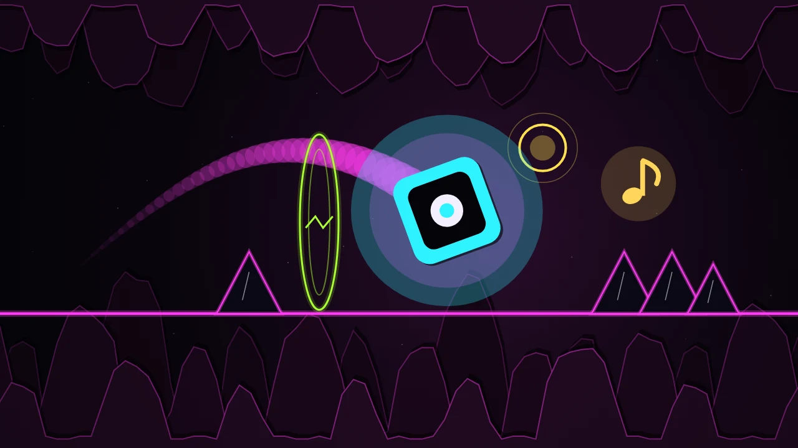

Thrumdash
Tap on the beat to jump, flip, zigzag and fly through 30 neon songs composed from seeds. Collect echo notes, keep your groove and race a friend's ghost.
Thrumdash is a one-touch rhythm dash game where every level is a song. Each song is composed in your browser from a seed, and every spike, orb and tunnel sits exactly on its beat, so if you follow the music you can feel where the next jump goes. Tap or hold anywhere to play: no buttons to hunt for.
Your runner switches between four modes as the music changes. As a Cube you tap or hold to jump. In Flip sections a tap swaps gravity between floor and ceiling. The Wave zigzags up while you hold and dives when you let go, threading saw-toothed tunnels that follow the melody. The Ship climbs while you hold and sinks when you let go. Yellow orbs give a mid-air jump when you tap on them and pink pads launch you by themselves. A short count-in starts every song and the mode banner tells you what changed.
There are 30 hand-tuned songs across six worlds, from Ink Hollow to the Bassline Abyss, each with its own neon accent colour and paper-cut skyline that pulses with the bass. Every song has three clearly explained stars: finish it, collect all three echo notes hidden on the line, and finish with at least 75% Groove, which means your taps land on the beat. The goal card shows them before you play, the HUD shows live progress, and the results screen waits for you and never moves on by itself. Dying shows your percentage and best, and a tap anywhere restarts instantly. Practice mode drops checkpoints on every bar so you can learn the hard part.
The Daily Song gives everyone the same new song each day and keeps your streak. In the Seed Lab you choose a seed word, tempo, difficulty, mood, length and the order of modes, and Thrumdash composes a brand-new song and level from it. Copy the link and anyone who opens it gets exactly the same song. After any run you can share a card with your percentage and a mini replay strip, plus a challenge link that opens the same song with your ghost racing alongside your friend.
Stars, streaks and cleared songs unlock 12 runner icons and 8 trails. A calibration screen measures your audio and touch delay so timing feels right on any phone, tablet or headphones. Music and sound effects are synthesized live, the game runs smoothly on 120 Hz screens, works offline, and your progress is saved on your device.